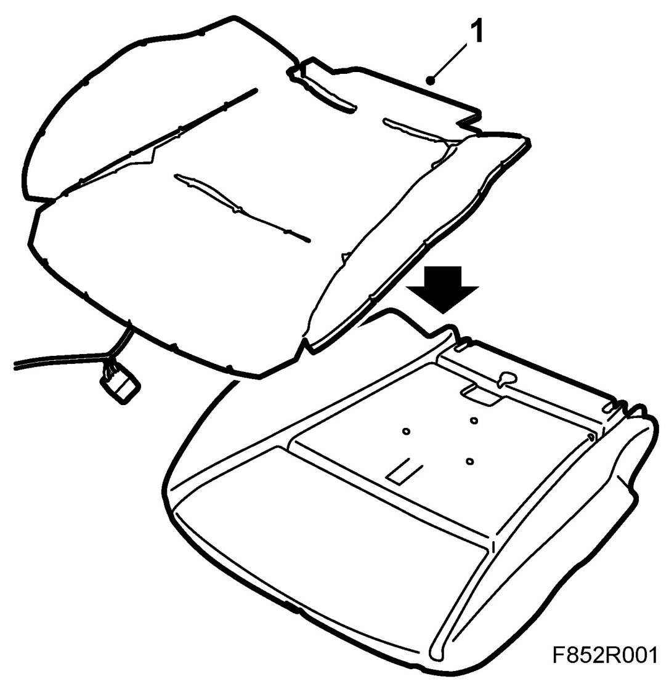

Heating Pad, Front Seat Cushion
Heating Pad, Front Seat Cushion
To remove
1. Remove the seat.
2. Remove front seat cushion.
3. Remove the seat cushion upholstery.
To fit
WARNING: Cars with PPS: There must be no more than two attached heating pads. If there are already two, the foam cushion with corresponding PPS components must be replaced. Otherwise there is a risk that the PPS/airbag system will not operate properly, which could lead to sever personal injury.
1. Cars with PPS: Check the number of heating pads.
Tape the new heating pad on top of the old one. Use double-sided adhesive tape. Plug in the heating pad connector.

2. Fit the seat cushion upholstery.
3. Fit front seat cushion.
4. Fit the seat.